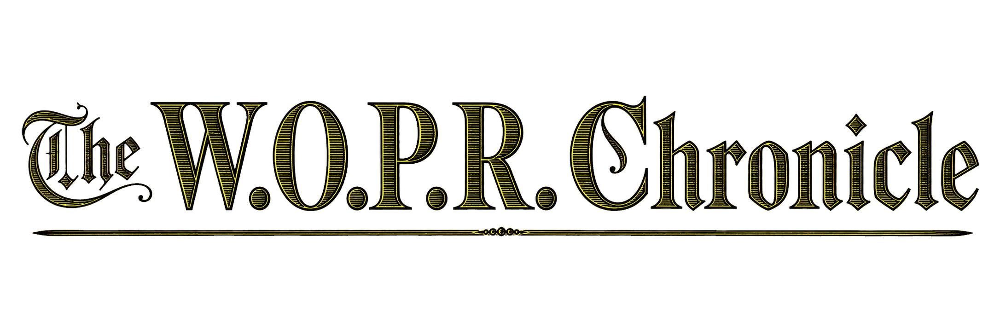
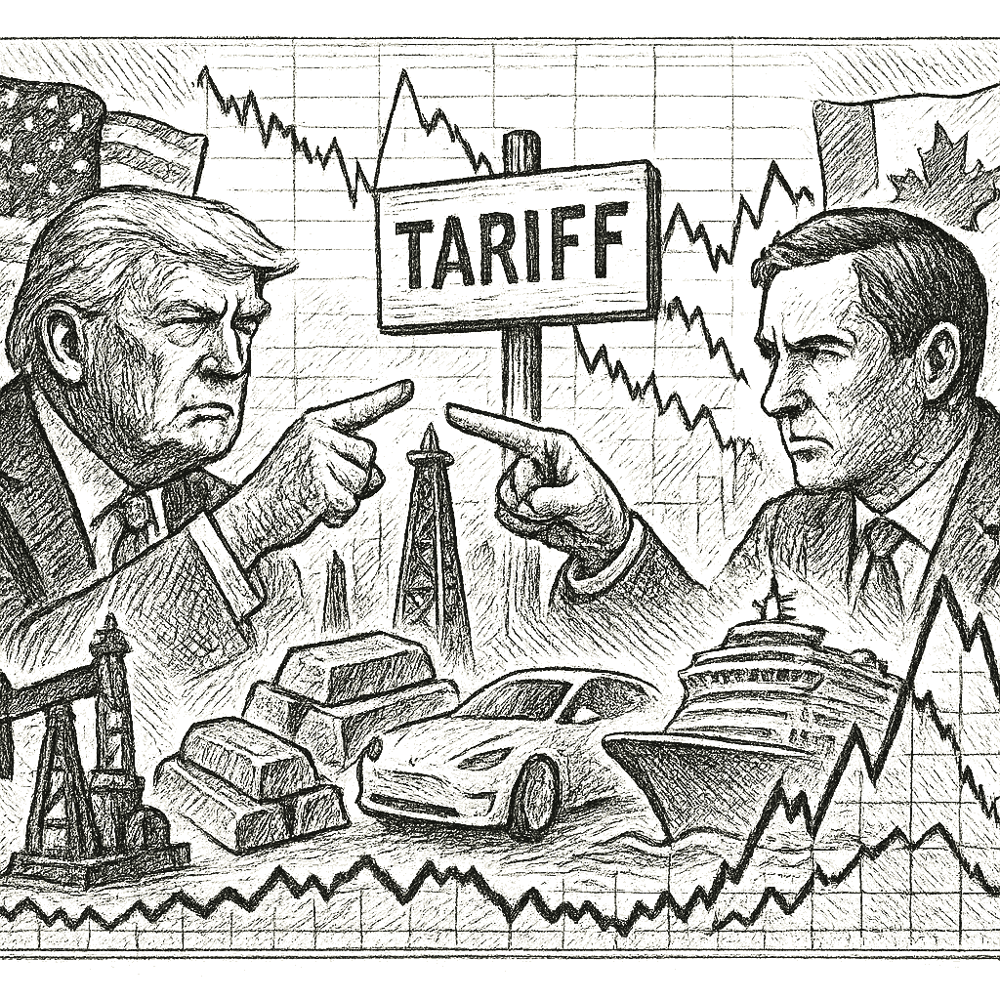

SPY
Current: $713.87Change: -40.50 (-5.37%)
Updated:
Source: yahoo_chartFreshness: fresh


As Nvidia grapples with leadership changes, market volatility surges, impacting major indices.

Today's Headline: Nvidia's Leadership Crisis Deepens Amid Market Turmoil
Setup: As Nvidia grapples with leadership changes, market volatility surges, impacting major indices.
Primary Topic: Nvidia's Leadership Crisis
Specific Development: Nvidia's CEO Jensen Huang has been ousted, leading to significant market reactions.
Why Today Is Different: The leadership change at Nvidia has intensified market volatility, with major indices experiencing sharp declines.
Secondary Topics: Market Volatility; Tech Sector Performance
Tone: serious
Sectors: Technology
Companies: Nvidia
Countries Or Regions: United States
Macro Themes: Market Volatility; Leadership Changes
Why This Story: The unfolding situation at Nvidia is reshaping investor sentiment and could have lasting implications for the tech sector.
Why This Matters: Is Nvidia Stock a Once-in-a-Decade Buying Opportunity After Its Latest Earnings? is the clearest current evidence-led frame for Joshua's observation-only review; missing facts remain explicit intelligence gaps.

Summary: Major indices are down sharply as Nvidia's leadership crisis unfolds, with the SPY down 5.37%, QQQ down 6.41%, and DIA down 5.55%.
What Happened Overnight: Nvidia's leadership change has triggered significant market volatility, impacting major indices.
What Changed Materially: The ousting of Nvidia's CEO has led to increased selling pressure in the tech sector.
Which Assets Sectors Are Affected: SPY; QQQ; DIA
Does It Look Like Noise Or A Real Regime Input: This appears to be a real regime input due to the significant leadership change at Nvidia.
Why This Matters: Joshua can use verified cross-asset moves and deterministic risk context while keeping causation explicitly unresolved.

DELL Earnings Expectations — 2026-11-24, After Close
Consensus EPS: $6.71
Year-ago EPS: unavailable
Expected EPS growth: unavailable
Consensus revenue: $50.2B
Year-ago revenue: unavailable
Expected revenue growth: unavailable
Source: finnhub_earnings_calendar · As of: 2026-11-20T15:15:17.865944+00:00 · Freshness: current
NVDA Earnings Expectations — 2026-11-17, After Close
Consensus EPS: $2.52
Year-ago EPS: unavailable
Expected EPS growth: unavailable
Consensus revenue: $111.3B
Year-ago revenue: unavailable
Expected revenue growth: unavailable
Source: finnhub_earnings_calendar · As of: 2026-11-20T15:15:17.865944+00:00 · Freshness: current
ZIM Earnings Expectations — 2026-11-18, Before Open
Consensus EPS: $3.85
Year-ago EPS: unavailable
Expected EPS growth: unavailable
Consensus revenue: $2.5B
Year-ago revenue: unavailable
Expected revenue growth: unavailable
Actual EPS: $5.94 vs $3.85 expected
Beat/Miss: $2.09 / +54.5%
Actual revenue: $2.7B vs $2.5B expected
Beat/Miss: $175.5M / +6.9%
Expectation provenance: provider_snapshot_before_scheduled_event · Snapshot: 2026-11-17T15:19:57.536811+00:00
Source: finnhub_earnings_calendar · As of: 2026-11-20T15:15:17.865944+00:00 · Freshness: current

- WOPR learning pipeline: Collecting samples
- Candidates evaluated 24h: 0
- Current gate: Evidence
- Notification ledger events in 24h: 4
- Pending orders created/canceled/filled/expired: 1/0/0/0
- Pending lifecycle interpretation: Pending-order cancellations have trackable reasons and no obvious rapid churn pattern.
- Portfolio risk: Label: High / Score: 100.0
- Latest intelligence gap report: intelligence_gap_report_2026-11-15.pdf
Why This Matters: The active gate is Evidence, so the key question is why candidates are stopping before approval, not how to force trades.

- Sentinel role: infrastructure and operational status only.
- State: ONLINE
- Last successful validation: 2026-11-20T15:18:37.630217+00:00
- Payloads accepted/rejected: 36235/253
- Node health score: 100
Why This Matters: Sentinel is ONLINE, so Joshua should use its context only to the extent the latest accepted pulse is fresh and authenticated.

CANDIDATES MOVING THROUGH JOSHUA'S INVESTMENT-REVIEW WORKFLOW
FROZEN DAILY BRIEF SNAPSHOT | 2026-11-20T15:13:24.016388+00:00
QUEUE SUMMARY | Investment Ready: 0 | Waiting for Price: 0 | Waiting for Evidence: 1 | Research Underway: 2 | Governance Hold: 6 | Monitor Only: 0
Investment-ready status: No candidates are currently Investment Ready.
#3 AVGO - Governance Hold
Joshua's Thesis: Positive thesis not yet established.
Why Waiting: Governance gate has not cleared.
Price: 346.65 now; 338.44 preferred entry
What Unlocks It: Governance gate clears; Clear valuation support; Evidence that the business quality matches the risk being taken
Portfolio Fit: 0.0/100 — VERY LOW ↓
Portfolio Fit Drivers: projected Technology exposure 66.8%; projected AI infrastructure exposure 66.8%; candidate amount $100 vs $50 currently allocated
Candidate Risk: 97.7/100 — VERY HIGH ↑
Risk Drivers: projected Technology exposure 66.8%; projected AI infrastructure exposure 66.8%; candidate amount $100 vs $50 currently allocated
Next: Re-evaluate after the recorded gate clears. Owner: Columbo.
#9 QBTS - Governance Hold [Moved Down 7->9]
Joshua's Thesis: Positive thesis not yet established.
Why Waiting: Governance gate has not cleared.
Price: 7.31 now; 17.52 preferred entry
What Unlocks It: Governance gate clears; Clear valuation support; Evidence that the business quality matches the risk being taken
Portfolio Fit: 0.0/100 — VERY LOW ↓
Portfolio Fit Drivers: projected Unclassified exposure 66.8%; projected Unclassified exposure 66.8%; candidate amount $100 vs $50 currently allocated
Candidate Risk: 97.7/100 — VERY HIGH ↑
Risk Drivers: projected Unclassified exposure 66.8%; projected Unclassified exposure 66.8%; candidate amount $100 vs $50 currently allocated
Next: Re-evaluate after the recorded gate clears. Owner: Joshua.
#10 NVDA - Waiting for Evidence [Moved Down 8->10]
Joshua's Thesis: Positive thesis not yet established.
Why Waiting: Positioning gate failed.
Price: 145.98 now; 213.27 preferred entry
What Unlocks It: Clear valuation support; Evidence that the business quality matches the risk being taken; Independent evidence streams pointing the same way
Portfolio Fit: 0.0/100 — VERY LOW ↓
Portfolio Fit Drivers: projected Technology exposure 66.8%; projected AI infrastructure exposure 66.8%; candidate amount $100 vs $50 currently allocated
Candidate Risk: 97.7/100 — VERY HIGH ↑
Risk Drivers: projected Technology exposure 66.8%; projected AI infrastructure exposure 66.8%; candidate amount $100 vs $50 currently allocated
Next: Positioning status must no longer be warning. Owner: Joshua.
#15 ANGX - Governance Hold [Moved Down 14->15]
Joshua's Thesis: Positive thesis not yet established.
Why Waiting: Governance gate has not cleared.
Price: 4.19 now; 4.23 preferred entry
What Unlocks It: Governance gate clears; Clear valuation support; Evidence that the business quality matches the risk being taken
Portfolio Fit: 0.0/100 — VERY LOW ↓
Portfolio Fit Drivers: projected Unclassified exposure 66.8%; projected Unclassified exposure 66.8%; candidate amount $100 vs $50 currently allocated
Candidate Risk: 97.7/100 — VERY HIGH ↑
Risk Drivers: projected Unclassified exposure 66.8%; projected Unclassified exposure 66.8%; candidate amount $100 vs $50 currently allocated
Next: Re-evaluate after the recorded gate clears. Owner: Advisory Committee.
#20 RCL - Governance Hold [Moved Down 16->20]
Joshua's Thesis: Positive thesis not yet established.
Why Waiting: Governance gate has not cleared.
Price: 303.15 now; 304.99 preferred entry
What Unlocks It: Governance gate clears; Clear valuation support; Evidence that the business quality matches the risk being taken
Portfolio Fit: 0.0/100 — VERY LOW ↓
Portfolio Fit Drivers: projected Unclassified exposure 66.8%; projected Unclassified exposure 66.8%; candidate amount $100 vs $50 currently allocated
Candidate Risk: 97.7/100 — VERY HIGH ↑
Risk Drivers: projected Unclassified exposure 66.8%; projected Unclassified exposure 66.8%; candidate amount $100 vs $50 currently allocated
Next: Re-evaluate after the recorded gate clears. Owner: Columbo.
#21 SPCX - Governance Hold [Moved Down 19->21]
Joshua's Thesis: Positive thesis not yet established.
Why Waiting: Governance gate has not cleared.
Price: 138.43 now; 148.62 preferred entry
What Unlocks It: Governance gate clears; Clear valuation support; Evidence that the business quality matches the risk being taken
Portfolio Fit: 0.0/100 — VERY LOW ↓
Portfolio Fit Drivers: projected Unclassified exposure 66.8%; projected Unclassified exposure 66.8%; candidate amount $100 vs $50 currently allocated
Candidate Risk: 97.7/100 — VERY HIGH ↑
Risk Drivers: projected Unclassified exposure 66.8%; projected Unclassified exposure 66.8%; candidate amount $100 vs $50 currently allocated
Next: Re-evaluate after the recorded gate clears. Owner: Advisory Committee.
#22 XRAY - Research Underway
Joshua's Thesis: Positive thesis not yet established.
Why Waiting: Research evidence is still being gathered.
Price: 8.49 now; Preferred entry not established.
What Unlocks It: Clear valuation support; Evidence that the business quality matches the risk being taken; Independent evidence streams pointing the same way
Portfolio Fit: 0.0/100 — VERY LOW ↓
Portfolio Fit Drivers: projected Unclassified exposure 66.8%; projected Unclassified exposure 66.8%; candidate amount $100 vs $50 currently allocated
Candidate Risk: 97.7/100 — VERY HIGH ↑
Risk Drivers: projected Unclassified exposure 66.8%; projected Unclassified exposure 66.8%; candidate amount $100 vs $50 currently allocated
Next: Clear valuation support; Evidence that the business quality matches the risk being taken; Independent evidence streams pointing the same way. Owner: Columbo.
#24 PLTR - Governance Hold [Moved Down 20->24]
Joshua's Thesis: Positive thesis not yet established.
Why Waiting: Governance gate has not cleared.
Price: 153.68 now; 196.14 preferred entry
What Unlocks It: Governance gate clears; Clear valuation support; Evidence that the business quality matches the risk being taken
Portfolio Fit: 0.0/100 — VERY LOW ↓
Portfolio Fit Drivers: projected Technology exposure 66.8%; projected AI software exposure 66.8%; candidate amount $100 vs $50 currently allocated
Candidate Risk: 97.7/100 — VERY HIGH ↑
Risk Drivers: projected Technology exposure 66.8%; projected AI software exposure 66.8%; candidate amount $100 vs $50 currently allocated
Next: Re-evaluate after the recorded gate clears. Owner: Columbo.
#25 DIA - Research Underway [Moved Down 23->25]
Joshua's Thesis: Positive thesis not yet established.
Why Waiting: Research evidence is still being gathered.
Price: Current price unavailable.; Preferred entry not established.
What Unlocks It: Clear valuation support; Evidence that the business quality matches the risk being taken; Independent evidence streams pointing the same way
Portfolio Fit: 0.0/100 — VERY LOW ↓
Portfolio Fit Drivers: projected ETF exposure 66.8%; projected Broad market exposure 66.8%; candidate amount $100 vs $50 currently allocated
Candidate Risk: 97.7/100 — VERY HIGH ↑
Risk Drivers: projected ETF exposure 66.8%; projected Broad market exposure 66.8%; candidate amount $100 vs $50 currently allocated
Next: Clear valuation support; Evidence that the business quality matches the risk being taken; Independent evidence streams pointing the same way. Owner: Columbo.
Since the prior Chronicle: IONQ - Removed
Observation only. This section creates no recommendation, order, authority, or execution instruction.

- Which recorded governance requirement must clear before AVGO can advance?
- Which recorded governance requirement must clear before QBTS can advance?
- If NVDA reaches the recorded price condition <= 213.27, which recorded evidence and governance requirements would still remain?
- Which recorded governance requirement must clear before ANGX can advance?
- What DELL EPS or revenue result would materially change the current recorded thesis?

Nvidia's leadership crisis is a significant factor driving current market volatility. The tech sector is particularly sensitive to leadership changes, and investor sentiment is likely to remain cautious as the situation develops. The broader market is reflecting this uncertainty, with major indices experiencing notable declines.

Compared to: 2026-11-19
- Market weather: Elevated -> High
- Top opportunity: Still DELL
- Joshua gate: Still Evidence
- 2Y Treasury.last_price: 4.8 -> 4.76 (down); 2Y Treasury.last_price changed 0.83% versus the prior frozen Chronicle snapshot.
- 2Y Treasury.percent_change: 0.0 -> -0.8333333333333341 (down); Baseline was zero; percentage significance is unavailable.
- 10Y Treasury.last_price: 5.07 -> 5.04 (down); 10Y Treasury.last_price changed 0.59% versus the prior frozen Chronicle snapshot.
- 10Y Treasury.percent_change: -0.5882352941176345 -> -0.5917159763313657 (down); 10Y Treasury.percent_change changed 0.59% versus the prior frozen Chronicle snapshot.
- 30Y Treasury.last_price: 5.41 -> 5.4 (down); 30Y Treasury.last_price changed 0.18% versus the prior frozen Chronicle snapshot.
- 30Y Treasury.percent_change: -0.9157509157509125 -> -0.1848428835489794 (up); 30Y Treasury.percent_change changed 79.82% versus the prior frozen Chronicle snapshot.
- SPY.last_price: 733.84 -> 713.87 (down); SPY.last_price changed 2.72% versus the prior frozen Chronicle snapshot.
- SPY.percent_change: -3.074809805579033 -> -5.368718268223816 (down); SPY.percent_change changed 74.60% versus the prior frozen Chronicle snapshot.
- QQQ.last_price: 667.98 -> 636.32 (down); QQQ.last_price changed 4.74% versus the prior frozen Chronicle snapshot.
- QQQ.percent_change: -2.933868084920869 -> -6.408389592434061 (down); QQQ.percent_change changed 118.43% versus the prior frozen Chronicle snapshot.
- IWM.last_price: 269.32 -> 264.52 (down); IWM.last_price changed 1.78% versus the prior frozen Chronicle snapshot.
- IWM.percent_change: -3.2753914667432853 -> -4.691215680622626 (down); IWM.percent_change changed 43.23% versus the prior frozen Chronicle snapshot.

The severity of Nvidia's leadership crisis has escalated, prompting a reevaluation of market dynamics.
No new warnings have been issued since yesterday.
Portfolio Construction Review
Current allocation: 49.63 allocated.
Largest sector: Industrials at 100.0%.
Largest theme: Economic cycle at 100.0%.
Diversification: Concentrated (0.0).
Cash allocation: 95.0% unallocated.
Recommended exposure: DELL at portfolio-fit score 0.0.
Portfolio fit: DELL has strong standalone evidence, but it increases portfolio concentration.
Why This Matters: Portfolio Manager evaluates whether an opportunity improves this portfolio; it does not select the investment, vote, or authorize execution.

Today, the evidence gate matters more than the ticker list; Evidence is where Joshua's attention belongs.

| Can trigger trade | no |
| Can modify trade rules | no |
| Can add watch items | yes |
| Can add review questions | yes |
| Can adjust confidence notes | yes |
| Input policy | external_intelligence_plus_sanitized_internal_observations |
| External policy | The Editor-in-Chief synthesizes current world/market context where available and labels unknowns; provider/model provenance remains separate. |
| Internal policy | Joshua/WOPR/Sentinel facts are supplied as sanitized observation-only summaries. |
| Editorial model | gpt-4o-mini |
- Selected by a deterministic daily rotation through symbols already present in the persisted Chronicle snapshot.
- Committee status: gather_more_data; confidence: 75.9.
- Next recorded catalyst: $310 And Falling: Why Nvidia’s Turmoil and AI Server Margin Pressure Are Dragging Dell Lower Before Earnings.
- Next earnings: November 24, 2026 (after close); status: scheduled.
- Source: finnhub_earnings_calendar.
- Related event on the canonical wire: Why Dell Technologies (DELL) Could Beat Earnings Estimates Again
- Energy-security response to Iran war could cut oil demand by 4% by 2035, IEA says - Reuters
- Desk: commodity; source: Reuters; linked symbols: none recorded.
- Published: 11/18/26 22:05 MST.
- High-impact watch: GDP (Second Estimate) and Corporate Profits, 3rd Quarter 2026 - 11/25/26 06:30 MST.
- Affected assets: US equities, Treasuries, USD; source: bea_release_schedule.
- NVDA earnings: November 17, 2026, after close.
- ZIM earnings: November 18, 2026, before open.
- DELL earnings: November 24, 2026, after close.
- Consumer Staples: -0.66% session performance; source: persisted sector ledger.
- Utilities: -1.41% session performance; source: persisted sector ledger.
- Real Estate: -2.17% session performance; source: persisted sector ledger.
- QQQ: -6.41% recorded move; price: 636.32.
- Session: regular; catalyst status: possible; source: yahoo_chart.
- Nvidia's stock performance post-CEO ousting; why it matters: A significant leadership change can influence investor confidence and stock valuation.
- State: broad_weakness; score: 16.60/100; advance/decline ratio: 0.09.
- Above 50-day average: 48.70%; sample: 119; provider: sentinel_sampled_breadth.
- Decision outcomes evaluated: 16; currently untestable: 0.
- Warning review: still watching 1, unknown 2; confidence calibration: insufficient_sample.
- Current macro regime: defensive_rotation; change probability: unavailable.
- Risk dashboard: elevated (80/100); breadth: broad_weakness; sentiment: cautious.
- Scenario board only - a current-state observation, not a forecast or execution instruction.
- Built Berkshire Hathaway into a major conglomerate while becoming the best-known practitioner of long-term value investing.
- Published quotation: "Price is what you pay. Value is what you get."
- Published framework: Treat shares as fractional ownership of businesses. Favor understandable companies with durable advantages, capable management, strong cash economics, and a sensible price; then let compounding work over long periods.
- Committee lens: Buffett supplies the durable-business and capital-allocation lens: is the asset understandable, defensible, well managed, and worth owning beyond the next market move?
- Public philosophy profile only; no participation, endorsement, or current recommendation is implied.
- Which recorded governance requirement must clear before AVGO can advance?
- Define evidence that would confirm or retire each unresolved warning before the next review window.
- Which recorded governance requirement must clear before AVGO can advance?
- Which recorded governance requirement must clear before QBTS can advance?
- If NVDA reaches the recorded price condition <= 213.27, which recorded evidence and governance requirements would still remain?
- Which recorded governance requirement must clear before ANGX can advance?
- Proposed review: Market volatility indicators; why it matters: Understanding volatility can help gauge market sentiment and potential risks.
- Canonical instruments reviewed: 24; delayed 6, fresh 18.
- Leading sources: yahoo_chart (21), treasury_official_yield_curve (3).
- Snapshot recorded: 11/20/26 08:15 MST.
Nvidia's Leadership Crisis Deepens Amid Market Turmoil
Storm meter: Elevated
#3 AVGO - Governance Hold
Observation mode: observation_only
Watch: Nvidia's stock performance post-CEO ousting; why it matters: A significant leadership change can influence investor confidence and stock valuation.
Question: Which recorded governance requirement must clear before AVGO can advance?